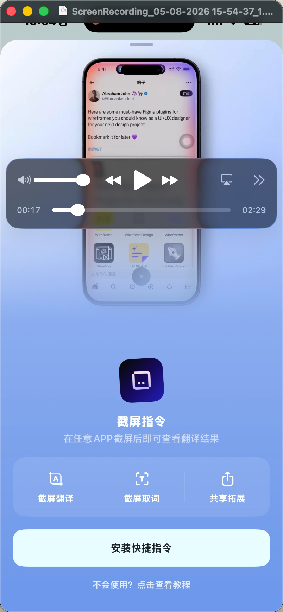
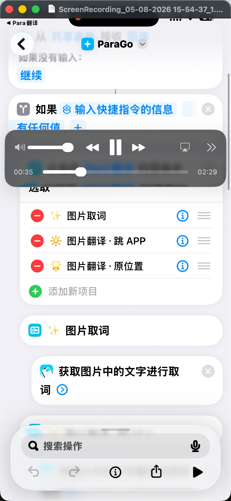
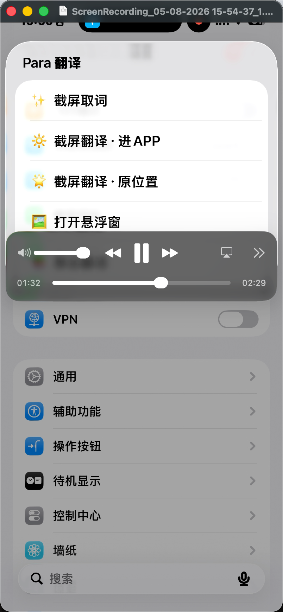
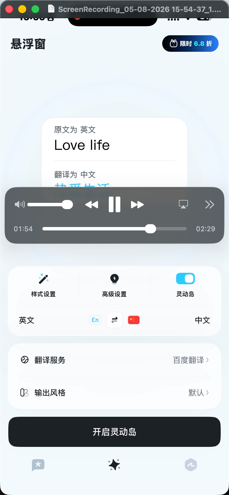

Send to Jovida
截图已准备好 · 怎么处理？
Jovida v0.17 · 本期迭代 主题与原型
本期 Wolves 这一 part 聚焦两件事：(1) 用 Live Activity 增强角色陪伴感；(2) 用快捷指令截图 + 剪贴板悬浮陪伴 + 暂存夹做外部信息顺畅导入。下面按 4 个 section 展开思路与原型。

JOVIDA
主题 ①·A
角色感 / 陪伴感（毛思通 part）
非 Live Activity 触点的角色感增强 — 不在本次讨论范围。
不在本次范围主题 ①·B
角色感 / 陪伴感（我的 part）
通过 Live Activity 触点（锁屏 + 灵动岛）让角色全天碎片化在场，帮用户更好完成 desire。
本次重点主题 ②
增强触点 · Live Activity
选锁屏 / 灵动岛是因为：持续性 + 无需授权 + 渗透率高。
本次重点主题 ③
外部信息顺畅导入
双通道：iOS 快捷指令截图 + 剪贴板悬浮陪伴。辅助物：暂存夹。
本次重点SECTION A
主题 ① + ② · Live Activity 触点
Jovida 的角色陪伴感落地到 Live Activity 触点上。分两步说明：① Live Activity 是什么、有哪些规则；② Jovida 在 Live Activity 上做什么、不做什么、什么时候该消失。
A1 · Live Activity 机制 · 先把基础概念对齐
📘 Live Activity 是一种能力，不是位置
- Live Activity 本身是一种"app 持续状态"能力，由 ActivityKit 框架管理。
- 展示位置是另一回事，可能展示在：锁屏 / 灵动岛 / Apple Watch Smart Stack / StandBy / iPad 锁屏。同一个 Live Activity 多位置展示。
- iOS 17+ 起支持互动按钮（SwiftUI Button + LiveActivityIntent，可放在锁屏 Live Activity 卡 和 灵动岛 expanded 大卡里）。
⚠️ Live Activity 不是想做什么都行 · Apple 政策红线
- 必须有用户行为或事件触发，不能 app 想弹就弹。
- 必须是有始有终的事件（有清晰的开始 / 结束时机），不能挂 always-on 当装饰。
- 不能投放广告 / 营销内容；不能用 Live Activity 绕过通知权限。
- 有时长上限：单个 Live Activity 最多 8h active + 4h stale = 12h，过了系统强制 end。
- 更新频率有 push 预算：高频更新被 throttling，秒级动画做不了。
A2 · Jovida Live Activity 的定位
定位
通过有情绪价值的 Jovida 教练角色，帮用户更好地完成 desire。
- 当下最该做的事（Action Now） — 如果用户当下有一件最该做的事，把它呈现在 Live Activity 上 + 一键完成或 snooze。
- 没有 Action Now → 给鼓励语 / 建议语 — 角色出来说一句温暖的话或轻量建议（不用户做什么具体事）。
- ① 和 ② 都不合适 → 隐藏 Live Activity — 不做装饰性占位。"我知道什么时候该消失"是陪伴感的关键素养。
📘 锁屏 vs 灵动岛 · 展开机制 + 按钮放置（看下面 mockup 前先理解）
- 锁屏 Live Activity 卡片 ⚠️ 技术上可放按钮（LiveActivityIntent 后台执行不开 app），但本 MVP 选不放。
- 灵动岛 compact（默认胶囊态） ❌ 不能放按钮 — 太小，整个胶囊是 1 个 tap target。
- 灵动岛 expanded（展开态） ✅ 技术上能放按钮（同一个 SwiftUI view）。三种触发方式：
- ① Live Activity 新启动时 — 系统自动展开几秒（不需要用户操作）
- ② 程序 update 带 AlertConfiguration — App 主动触发，自动展开几秒（不需要用户操作）
- ③ 用户主动长按 compact — 用户自己停留多久就多久
- 本 MVP 统一原则：所有 Live Activity 都不放按钮。无论锁屏卡片、灵动岛 compact、还是灵动岛 expanded，统统整体 tap 跳进 Jovida 处理。理由：① 简化心智，不要求用户辨认按钮；② 多数自动展开几秒就缩回，按钮 UX 价值低；③ 锁屏 / 灵动岛设计语言一致。
A3 - A5 · 三种状态 · 锁屏 Live Activity
三种状态横向对照 — 状态 ① Action Now（有事就推这件）/ 状态 ② 鼓励语（没 action 就出来打个招呼）/ 状态 ③ 隐藏（既没 action 也没合适话就消失）。
灵动岛展开态不单独做：状态 ① 时灵动岛 compact 里"💧 2/4"已经传达，alert 自动展开 / 用户长按时呈现同样的内容；状态 ② / ③ 时灵动岛分别是 compact 弱提示 / 系统默认黑胶囊。
A3状态 ① · Action Now
大卡片：角色 + 当下任务 + 进度 + 来自角色的一句话。不放按钮，整体 tap = 跳进 Jovida 进入 routine 流程。例：晚上 21:30，该开启今天的护肤 routine。
🧴 0/5
21:30
Friday, May 8
该开启今晚的护肤 routine 了
5 步 · 7 分钟 · 我陪你做
今日 ACTIONS · 3 / 4 完成
点开始 ›
GP 完整信息 + 整体 tap · 不放按钮 · 主驱动状态
A4状态 ② · 鼓励语
角色头像 + 正向鼓励文案。不放任何按钮，纯陪伴 · 让用户感到"被看见"。整体 tap 跳 dashboard。
✨ 4/4
15:30
Friday, May 8
今天 4 件事都搞定了 ✨
真的好棒 · 我为你骄傲 🌟
今日 ACTIONS · 4 / 4 已全清
GP 纯鼓励 · 不放按钮 · 角色"被看见"瞬间
A5状态 ③ · 隐藏
既没 Action Now 也没合适鼓励语 → 主动隐藏 Live Activity。其它系统通知正常显示（这里是微信），Jovida 让出锁屏 + 灵动岛位置。
23:48
Friday, May 8
微
微信 · 林糖
"晚安啦 周六见"
现在
GP Jovida 不出现 · 知道何时该消失
A6 · 灵动岛态对照（compact / 自动 expanded / 三态总览）补充
把灵动岛的两种主要展示态都摆出来，方便对照。compact 是用户日常看到的胶囊形态；自动 expanded（无需用户长按）是 alert / 启动触发的大卡片，C2·3 是个真实例子。
A6·1灵动岛 compact · 默认态
在 home / 任何 app 顶部一直可见。这是 Live Activity 的"低强度在场"形态 — 用户不抬眼也知道 Jovida 还在。整体 tap 跳处理 · 不能放按钮。
💧 2/4
用户在浏览任意 app / home
顶部胶囊一直在 → 抬眼瞥一下知道：
"还差 1 杯水"
"还差 1 杯水"
GP compact · 用户日常视野
A6·2灵动岛 expanded · 自动展开（非长按）
由 AlertConfiguration / Live Activity 启动 自动触发的大卡片展开，不需要用户长按。这里复用 C2·3 的剪贴板接住例：复制瞬间灵动岛自动弹出"已收入暂存夹"，几秒后缩回 compact。
已收入暂存夹
🔗 Anthropic Claude 4.7
📥 1
点我加以处理 →
朋友 · 王小明
AI
GP 自动 expanded · alert 触发 · 整体 tap，无按钮
A6·3三态对照表
灵动岛三态对照说明：
2/4
Compact
默认态 · 一直在顶部 · 整体 tap = 跳 app · ❌ 无按钮
Minimal
多 Live Activity 同存时压缩成圆点 · 点击切换 · ❌ 无按钮
大卡
+ 按钮
+ 按钮
Expanded
3 种触发：① 启动自动 ② AlertConfiguration ③ 长按 · ✅ 都能放按钮（iOS 17+）
本 MVP 选不放按钮（A6·2 例）
本 MVP 选不放按钮（A6·2 例）
A7 · 更新 Live Activity 时如何让用户注意到 · AlertConfiguration关键机制
用户场景：早上 Jovida 创建了护肤 LA，到中午要把内容换成"午餐 desire"——默认这种 update 是静默的，锁屏卡偷偷换内容、灵动岛字偷偷变。要让用户注意到，必须在 update 时附加 AlertConfiguration。下面把整个"注意力强度光谱"摆出来，配 Jovida 的取舍规则。
📘 核心机制 · 默认静默 vs Alert 触发自动展开
- 静默 update：调
activity.update(content)不带 alert · 锁屏卡和灵动岛 compact 内容偷偷换 · 用户只有自己抬眼看才发现。 - 带 AlertConfiguration 的 update：附加一个 alert 配置对象，触发四件事同时发生 ——
① 灵动岛自动展开 ~4 秒，再缩回 compact（无需用户长按）
② 锁屏 / 主屏弹出横幅（如果当前不在 Jovida app 内）
③ 触觉反馈
④ 提示音（默认或自定义） - 服务端 push 同理：APNs payload 里加
alert字段就触发同样的展开 + 横幅。
🎚 注意力强度光谱（从重到轻）· 设计稿可挑哪一档
调用方式
用户感受
Jovida 适用场景
Alert + sound +
.timeSensitive展开 + 横幅 + 声音 + 穿透 Focus / 勿扰。等同于一条强 push。
几乎不用 · 留给真正紧急的事（如健康预警）
Alert + sound
（默认）
（默认）
灵动岛展开 ~4s + 锁屏横幅 + 声音 + 触觉
事件锚点 · 早 7 点护肤、午间打卡、睡前拉伸
Alert +
sound: nil展开 + 横幅 + 触觉，无声
一般状态切换 · 如"完成水分目标"
仅 update
（无 alert）
（无 alert）
静默换内容 · 不展开 · 不弹横幅 · 不响
进度滚动 · 数字 +1、文案微调、兔子心情变化
改
staleDate文字变灰，标记"开始过期"，无任何提示音 / 展开
"刚刚的 desire 该重新对齐了"暗示
⚠️ HIG 硬约束 · alerts sparingly
- 原文："Use alerts sparingly and only for important changes. Frequent alerts can feel intrusive and may prompt people to disable Live Activities for your app."
- 频繁 alert = 用户去设置里关掉 Jovida 的 LA = 这个渠道直接死亡。Apple 这条是审核会查的红线，不是建议。
- 每天 alert 上限建议 2-3 次（早起 / 午间 / 临睡），其余用静默 update。
Jovida MVP 实操规则 · 把一天划成两类事件
事件锚点
每天 2-3 次
每天 2-3 次
Alert + sound · 早起护肤 / 午间 desire checkin / 睡前拉伸 ——
这是用户"该停下来看一眼 Jovida"的时刻
这是用户"该停下来看一眼 Jovida"的时刻
进度滚动
高频，全天
高频，全天
静默 update · 兔子心情、数字 +1、鼓励语轮换、staleDate 暗示 ——
不打扰，让"在场感"通过抬眼瞥一下传达
不打扰，让"在场感"通过抬眼瞥一下传达
特殊提醒
极少
极少
Alert +
.timeSensitive · 真正紧急、必须立刻处理（如健康风险信号、强承诺到期）💡 隐藏招 · onboarding 教用户"长按灵动岛"
- 除了 alert 自动展开外，用户长按 compact 灵动岛也能看大卡片。但用户多半不知道这个手势。
- Jovida 第一次创建 LA 时，可以配一条引导卡片："试试长按灵动岛看大图" —— 把这个手势行为种到用户肌肉记忆里，让被动陪伴升级成主动召唤。
- 这是产品教育（非 API 范畴），但对体验影响显著。建议在 onboarding 设计稿中预留这一步。
SECTION B
主题 ③·一 · 快捷指令截图导入 Jovida
借用 iOS 系统能力 双击背面 / Action Button → 运行快捷指令，把当前屏幕截图直接送进 Jovida 暂存夹。机制完全合规 + 0 切屏。先看 Para 翻译怎么做，再看 Jovida 怎么落地。
B1 · Para 翻译参考 · 三屏截图
Para 是 iOS 上做截图翻译最干净的产品，他们的 onboarding 三步走值得直接抄。下面三屏是 Para 真实界面。
B1·1Para · 安装快捷指令引导页
大图演示 + 标题 + 三 mini 卡片 + 底部蓝色 CTA「安装快捷指令」。

B1·2Para · 快捷指令详情（iOS 系统页）
用户被跳到 iOS 快捷指令 app 内的"ParaGo"详情页 → 直接添加。

B1·3Para · 双击背面后弹菜单
用户在任意 app 双击背面 → iOS Choose from Menu 弹出 4 个选项："截屏取词 / 截屏翻译·进 APP / 截屏翻译·原位置 / 打开悬浮窗"。

B2 · Jovida 对应三屏 2 选项
同样的三步走，UI / 文案 / 选项换成 Jovida 的。第三屏的弹出菜单只放 2 个选项：① 创建 desire；② 暂时存入暂存夹。没有"截屏并打开 Jovida"—— 因为我们的核心场景就是"先存后处理"。
B2·1Jovida · 安装快捷指令引导页
参考 Para 排版。大图演示 + 角色 + 三 mini 卡片 + 底部 CTA。
跳过
DEMO · 双击背面 → 截图飞入
📱
→
→ 暂存夹
截图快捷指令
在任何 APP 双击背面，
当前画面自动送进 Jovida 暂存夹
当前画面自动送进 Jovida 暂存夹
📷
双击截图
⊕
创建 desire
📥
存暂存夹
安装快捷指令 →
不合适？点击查看教程
GP Jovida 安装引导 · 抄 Para 排版换 Jovida 内容
B2·2Jovida · 快捷指令详情（iOS 系统页）
用户跳到 iOS 系统快捷指令 app · "Send to Jovida"详情页。点「添加快捷指令」即可。
‹ Jovida
Send to Jovida
Send to Jovida
截屏当前画面，送进 Jovida 暂存夹
快捷指令步骤
📷截屏
📋选择菜单：创建 desire / 存暂存夹
🌐发送到 Jovida
+ 添加快捷指令
GP iOS 系统页 · 一键添加
B2·3Jovida · 双击背面后弹菜单
3 个选项：① 创建新 desire；② 加入已有 desire；③ 暂时存入暂存夹（默认推荐）。比 Para 4 选项精简，但保留"加入已有"高频路径。
🍱
招牌泰式椰浆鸡饭
月售 2300+ · ¥38
⊕ 创建新 desire
◎ 加入已有 desire
📥 暂时存入暂存夹
取消
GP 3 个选项，比 Para 精简 · 保留"加入已有"高频路径
SECTION C
主题 ③·二 · 剪贴板悬浮陪伴 · 复制即接住
用 PiP（画中画）让 Jovida 在用户切其它 app 时享有"准前台"待遇，持续接收用户复制的内容。Para 翻译已经在用这条路径。文案上避开"监听"，用 悬浮陪伴。
C1 · Para 翻译参考 · 悬浮窗 + 灵动岛
Para 用 PiP 悬浮窗 + 灵动岛展示翻译过程。下面是 Para 真实界面。
C1Para · 悬浮窗 + 开启灵动岛
Para 主页"悬浮窗"页签：原文 / 翻译为 / 样式 / 高级 / 灵动岛。底部大黑按钮「开启灵动岛」。

C1·note机制说明
关键事实（搜过 Apple 文档 + 开发者社区确认）：
✓ 技术能跑：iOS PiP 享准前台待遇，可读 UIPasteboard。Para 已上架。
⚠️ 政策灰色：PiP 本意放视频，借规则空隙做剪贴板。Apple 哪天收紧规则可能死。
🔁 替代路径：用户切回 Jovida 时检测剪贴板（合规），但失去"实时接住"。
👉 推荐：作为用户可选的"加强模式"给重度用户，默认走切回检测。
C2 · Jovida 四屏 悬浮陪伴
四步：① 引导用户开启悬浮陪伴 → ② 用户在外部（微信）复制了一个文章链接 → ③ 灵动岛 alert 自动弹出告知"已收入暂存夹" → ④ 用户点击灵动岛 / 通知 → 直达单条处理详情页。
C2·1引导开启「悬浮陪伴」
参考 Para 引导排版。文案换成"悬浮陪伴"（不用"监听"）+ 角色解释 + 一键开启。
跳过
DEMO · 你复制 Jovida 接住
悬浮中 · 接到 1
↑ 在任何 app 上方都能看到
让我悬浮陪着你
你复制什么我都接
你复制什么我都接
微信 / 小红书 / 浏览器 / 飞书
任何 app 里复制的链接 / 文字 / 截图
我都自动接进暂存夹
任何 app 里复制的链接 / 文字 / 截图
我都自动接进暂存夹
✓
悬浮小窗不打断你正在看的 app
✓
关掉 = 立刻停手，你说了算
✓
密码 / 验证码自动忽略，不接
让我开始悬浮陪你
不开 · 之后再说
GP 文案换成 悬浮陪伴 · 不用"监听"
C2·2在微信复制一个文章链接
用户跟朋友聊天，对方分享一个文章链接，用户长按复制。Jovida 悬浮小窗已在屏幕一角"在听"中。
📥 0
朋友 · 王小明
这篇 AI 文章特别好
AI
建议你看看，思路很赞
输入消息
Jovida
● 在听...
GP 用户在微信复制 · 悬浮小窗"在听"
C2·3灵动岛弹下来 · 已收入暂存夹
复制瞬间 → 灵动岛 alert 模式自动弹出大卡片："已收入暂存夹 · 点我加以处理"。不放按钮 — 自动展开态无按钮规则。整个灵动岛大卡片是 1 个 tap target，点击 = 跳到这条 detail 页。几秒后自动缩回 compact。
已收入暂存夹
🔗 Anthropic Claude 4.7
📥 1
点我加以处理 →
朋友 · 王小明
AI
GP 灵动岛 alert 大卡片 · 整体 tappable，无按钮
C2·4点灵动岛 → 单条处理详情页
用户点击 alert 大卡片 → 跳过列表，直接落到这条的处理详情页。Agent 已分析好 + 3 个动作按钮（加入已有 / 创建新 / 发送聊天），与暂存夹 D2 同一个页面。
‹ 返回微信
刚接到
📋 微信复制 · 直达
Anthropic 发布
Claude Opus 4.7
Claude Opus 4.7
anthropic.com
🔗 链接
微信 · 王小明
AI / 科技文章
这是关于 Claude 4.7 在 agentic 任务上的提升。要加进你的「AI 新闻」desire，明早给你三句话摘要吗？
◎
加入「AI 新闻」desire›
⊕
创建新 desire›
💬
发送到聊天给 Jovida›
GP 复用 D2 同一个详情页 · Agent 推荐 + 3 动作
SECTION D
主题 ③·辅助物 · 暂存夹
B + C 两条路径都汇到这里。暂存夹是统一的"收件夹"，用户随时回头处理。每条 item 三个快捷操作：① 创建 desire / ② 加入某个 desire / ③ 发送到聊天。
D1暂存夹 · 列表页
所有进来的 item（图片 + 文字 + 链接）按时间倒序。每条就近暴露 3 个 quick action：⊕ desire / ◎ 加入 / 💬 发到聊天。
📥 待你处理5 个新东西
已处理 18
暂存夹
最新 ▾
🔗
📋 复制 · 微信刚刚
Anthropic 发布 Claude 4.7 · anthropic.com
⊕新 desire
◎加入
💬聊天
🍱
📷 截图 · 外卖22 分前
麦当好 · 椰浆鸡饭 ¥38
⊕新 desire
◎加入
💬聊天
💬
📋 复制 · 微信2 小时前
"周六晚 7 点？我已经定好啦"
⊕新 desire
◎加入
💬聊天
💄
📷 截图 · 小红书昨天
干皮修复精华推荐
⊕新 desire
◎加入
💬聊天
¶
📋 复制 · 飞书昨天
"我们的 5 月计划：增强角色感..."
⊕新 desire
◎加入
💬聊天
GP 列表 · 每条 3 个 quick action 就近露出
D2单条处理 · 链接 item
用户点开刚接到的 AI 文章链接 → Agent 已分析。3 个动作按钮：创建 desire / 加入现有 / 发送聊天。Primary 是 Agent 推荐路径。
‹
暂存夹 · 1 / 5
📋 微信复制 · 14:22
Anthropic 发布
Claude Opus 4.7
Claude Opus 4.7
anthropic.com
🔗 链接
微信 · 王小明
AI / 科技文章
这是一篇关于 Claude 4.7 在 agentic 任务上的提升报道。要不要加进你的「AI 新闻」desire，明天早晨给你一个三句话摘要？
◎
加入「AI 新闻」desire›
⊕
创建新 desire›
💬
发送到聊天给 Jovida›
GP 单条详情 · 3 动作按钮 · Primary 是 Agent 推荐
D3「加入 desire」选择面板
用户点「加入 desire」→ 弹出当前所有 desire 列表，Agent 高亮推荐项。
‹ 取消
加入 desire
把这条「Anthropic Claude 4.7」加入哪个 desire？
JOVIDA 推荐
🤖
AI 新闻
每日 3 句话摘要 · 已收 12 条
›
🥗
减肥
3 周 · 已减 1.8kg
›
💄
护肤
每晚 routine · 连胜 14 天
›
💬
追 crush
林糖 · 跟进 21 天
›
⊕
创建新 desire
GP 选择面板 · Agent 推荐项高亮
🌀 本期迭代 · 一图回顾
┌─────────────────────────────────────────────────────────────────┐
│ 本期 Wolves part：Live Activity + 外部信息导入 │
└─────────────────────────────────────────────────────────────────┘
主题 ① + ② Live Activity（角色感 + 触点增强）
├── 状态 ① Action Now → 锁屏 + 灵动岛展开（含按钮）
├── 状态 ② 鼓励语 → 锁屏 + 灵动岛展开（无 primary）
└── 状态 ③ 隐藏 → 主动消失，知道何时该不打扰
主题 ③ 外部信息顺畅导入
│
├── 路径一 快捷指令截图（双击背面 / Action Button）
│ ├ 引导安装快捷指令
│ ├ iOS 系统页一键添加
│ └ 双击后弹 2 选项菜单（创建 desire / 存暂存夹）
│
├── 路径二 剪贴板悬浮陪伴（PiP）
│ ├ 引导开启「悬浮陪伴」（不用"监听"）
│ ├ 用户在外部 app 复制
│ └ 灵动岛 alert 弹出已收入 + 立即处理按钮
│
└── 辅助物 暂存夹
├ 列表 · 每条 3 个 quick action（创建 / 加入 / 聊天）
├ 单条详情 · Agent 已分析 + 推荐路径
└ 加入 desire 选择面板（推荐项高亮）